Chapter 3 Bivariate Data Analysis
During the previous session we learned how to analyse data with a single variable. Most of the times, however, big data will not contain one but multiple variables (hence its size!). To move forward in this direction, let’s now learn how to analyse datasets which contain two variables. We call this type of data bivariate.
Before starting this session you will need to install the packages “MVA”, “dslabs” and “ggplot”. You can do that by running the following lines:
install.packages("MVA")
install.packages("dslabs")
install.packages("ggplot2")
install.packages("ggrepel")Now that the installation has completed, let’s load them.
library(HSAUR2)
library(MVA)
library(dslabs)
library(ggplot2)
library(ggrepel)
library(rafalib)Now we are ready to start.
Loading the package “dslabs” will add a number of datasets to your R session. One of them is “murders”, which contains FBI records for murders by gun in several US states. These records were collected in 2010. Let’s assign this data set to a variable called “dat” (dat for data).
dat <- murdersLet’s look at the first few lines of the data set.
head(dat)## state abb region population total
## 1 Alabama AL South 4779736 135
## 2 Alaska AK West 710231 19
## 3 Arizona AZ West 6392017 232
## 4 Arkansas AR South 2915918 93
## 5 California CA West 37253956 1257
## 6 Colorado CO West 5029196 65Notice that the data contains four variables: Name of US state, abreviation of the state, region to which it belongs, size of the population for that state and total number of murders by gun registered. Of these variables, we will focus on the two numeric ones: population size and number of gun murders. Throughout this session we will try to ask a very simple question:
Are this two variables related? Or, in other words, are there more murders by gun in places where the population is bigger?
3.1 Visualising two variables
Eery one of these two variables (poulation size and number of murders) can be analysed using the techniques we learnt about in the previous session. For example, we can create a histogram of population size, and find out how populated states tend to be:
hist(dat$total, breaks=10, main="", xlab="Population", freq=F, col="grey")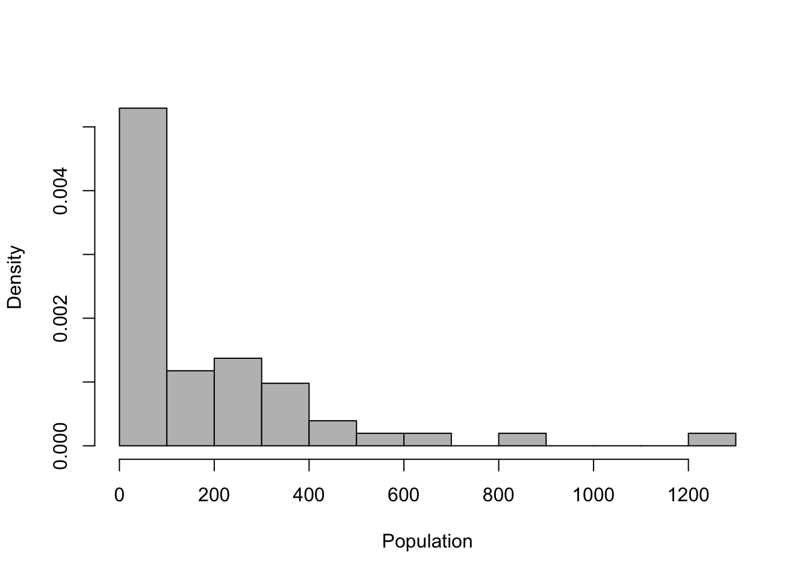
We can explore the number of murders in the exact same way:
hist(dat$total, breaks=10, main="", xlab="Population", freq=F, col="grey")
This already tells us that US states are highly variable both in terms of population and number of murders. In other words, while some states (like California) have more than 30 million inhabitants, some others (as Wyoming) hace only half a million.
However, we are analysing the variables in isolation. In other words, we are analysing them separately instead of together (jointly). Let’s now learn about some methods to visualise them at the same time, perhaps this can inform us of any relationship between them.
3.1.1 Scatter plot
A scatter plot is a plot of two variables in which each variable is encoded in each of the axes (X axis and Y axis). Pairs of valus are represented by points with an X and a Y coordinate. It is by far the most used plot in the entire field of statistics (and perhaps in a lot of sciences). Let’s create a plot with population size in the X axis and number of murders on the Y. To do this, we use the function “plot()”. The first value is the x and the second value the y.
plot(dat$population, dat$total, xlab="Population size", ylab="Number of gun murders")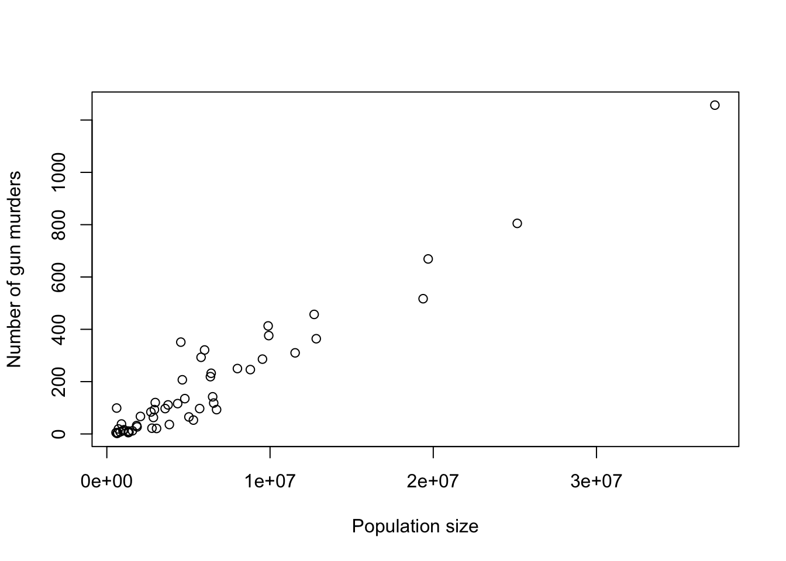
If we want to preserve the information we got from the historgrams for each variable and on top of that plot them together, we can add “marginal” distributions. They are called marginal because they literally are drawn on the “margins” or axes. You can think of them as tiny stripcharts/dot plots. To add marginal stripcharts in R, use the function rug().
plot(dat$population, dat$total, xlab="Population size", ylab="Number of gun murders")
rug(dat$population, side=1)
rug(dat$total, side=2)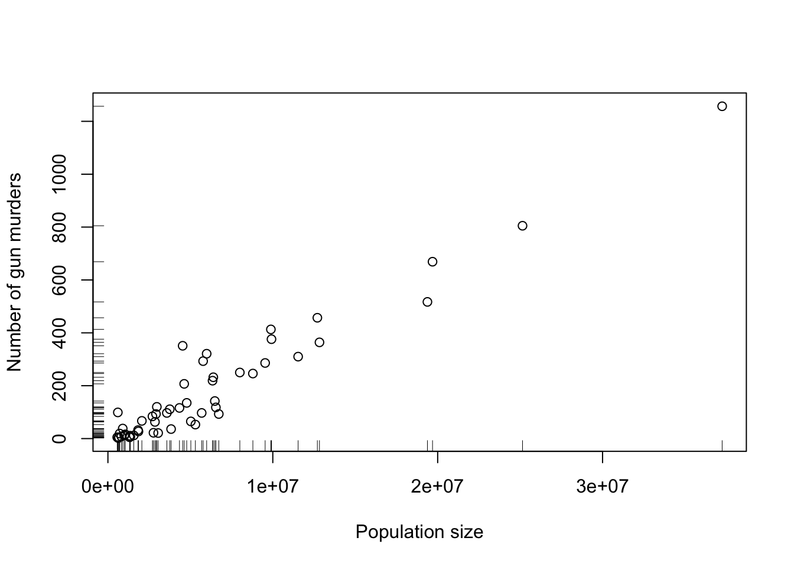
3.1.2 Bivariate box plots
If we want to know where the majority of our data is, we can use an “extension” of hte box plot in 2 dimensions (we learnt about the box plot in the previous session). This extension is called “bivariate box plot” (because it displays two variables) and we can draw it in R using the function “bvbox()”.
bvbox(dat[,c("population","total")],xlab = "Population in millions",ylab="Number of murders")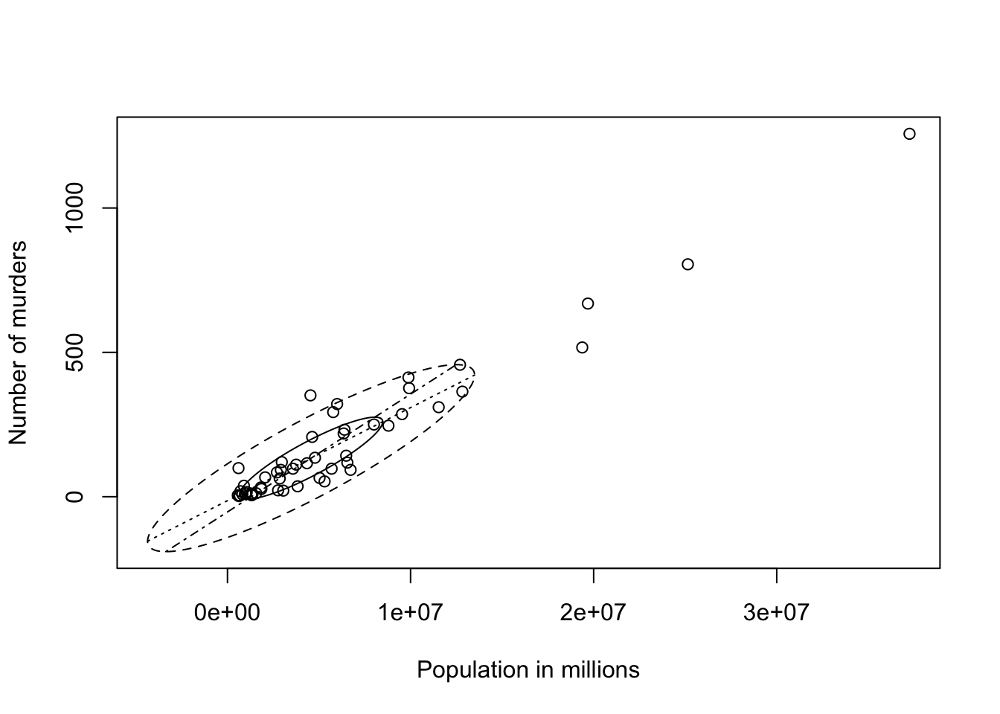
We can read this plot is as follows: there is a central ellipse which is the equivalent to the box of a boxplot, the central 50% of the data will be inside it. Surrounding it, there is a bigger ellipse (dotted lines), this is the equivalent of the “whiskers” of the boxplot and most of the data (ideally all) should fall inside it. The potential outliers can are dots falling outside the ellipses.
In this case, we can see 4 states with unusually high population and number of murders. These points are outisde the ellipses, so perhaps they are outliers.
3.2 Applying transformations to a variable
But are those points in the precious plots really outliers? There is a slight problem with this: we saw before that our data is quite variable and spread. Some states have tens of millions of inhabitants and some others fewer than a million. It is difficult to compare states when they are so different!
If you are still not convinced, look at the following density plot:
plot(density(dat$population), main="", xlab="Population size")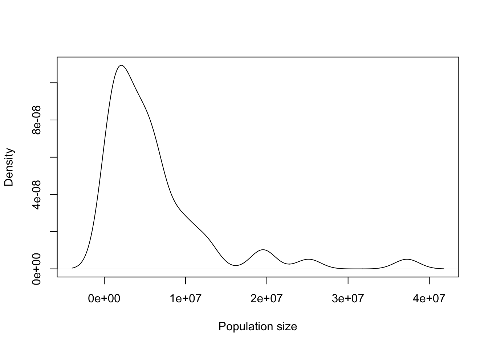
Do you see the long “tail” towards the left side of the plot? It is made of states with unusually high population size.
In cases like this, when the numbers vary so much and can be tiny or massive, we sometimes need to “transform” the data. What this means is that we modify it in a way that makes it more compressed, comparable and easy to handle.
One of the most common ways of “transforming” data is applying a logarithm. If you have studeid any logarithms before, you’ll remember that they are the opposite operation to exponents. Logarithms are very useful because they can be used to transform differences of hundreds or thousands into differences of units. For example, let’s look at the following series of numbers:
1, 10, 100, 1000, 100000, 1000000
They increase very fast! However, if we apply a simple logarithm (base 10) to them, the series becomes:
1, 2, 3, 4, 5, 6
Which is much easier to see and analyse.
Let’s apply a logarithm to the population size:
logpopulation <- log10(dat$population+1)Note we had to add 1 before applying the logarithm. This is because log(0) equals infinity, and R cannot deal with inifinte numbers (and neither can we).
Now let’s create a density plot of the “log-population size”:
plot(density(logpopulation), main="",xlab="log10(Population size)")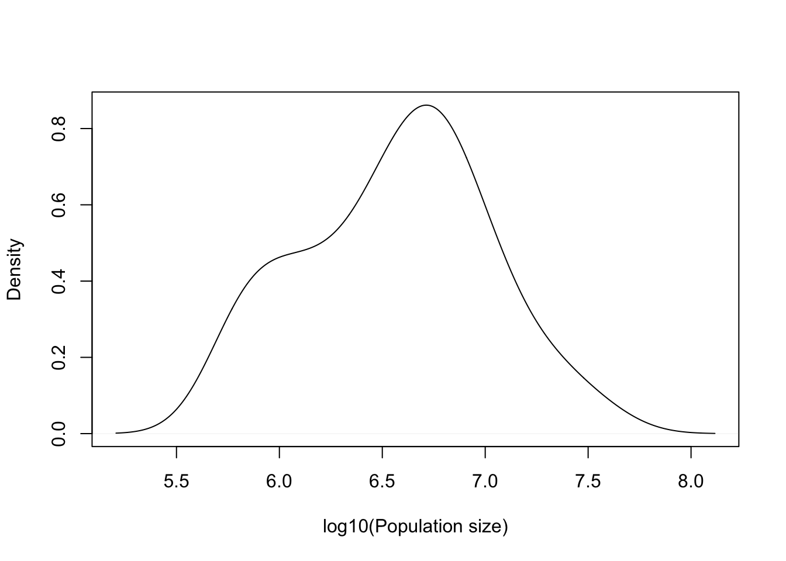
Compare this density plot with the previous one. Now the tail has dissapeared and our data looks like the usual “bell shape” we found in the previous session! The numbers on the x axis on this plot (5, 6, 7, 8) would be equivalent to 100000, 1000000, 10000000, 100000000 in the linear scale.
Let’s apply the logarithm to the number of murders too and plot it “against” the population size (against here means in the same plot). Let’s also add marginal stripcharts
logmurders <- log10(dat$total + 1)plot(logpopulation,logmurders,xlab = "log10( Population in millions )",ylab="log10( Number of murders )")
rug(logpopulation, side=1)
rug(logmurders, side=2)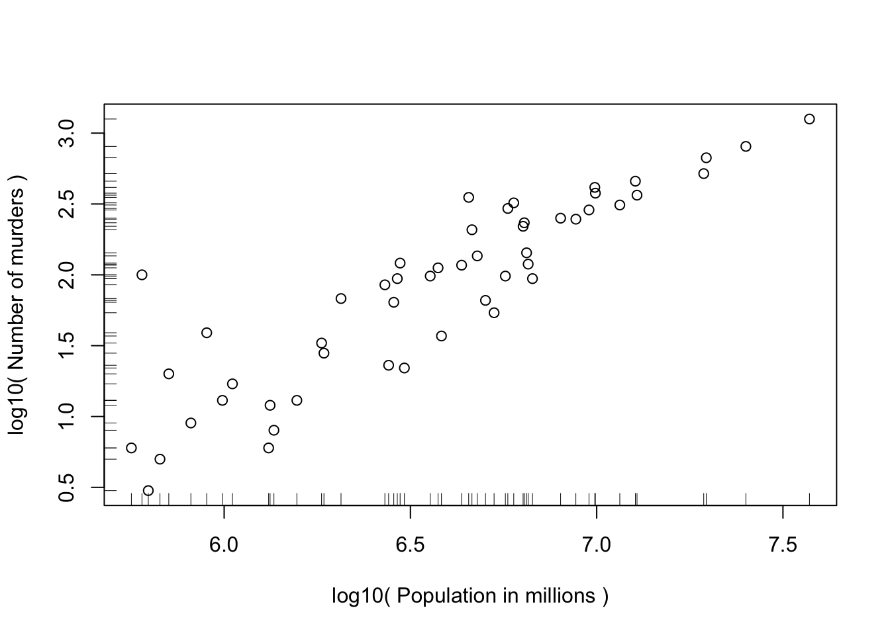
Now the plot looks much better! We can actually see all the points and they are evenly spaced. In fact, now it starts becoming obvious that there is some relationship between population size and number of gun murders. When one increses, the other increases too. They form some sort of straight line.
Since the logarithms worked so well, let’s replace the original variables in our data with their transformations:
dat$population <- logpopulation
dat$total <- logmurdersLet’s create a bivariate box plot now using the “transformed” (log) data.
bvbox(dat[,c("population","total")],
xlab = "log( Population in millions )",
ylab="log( Number of murders )")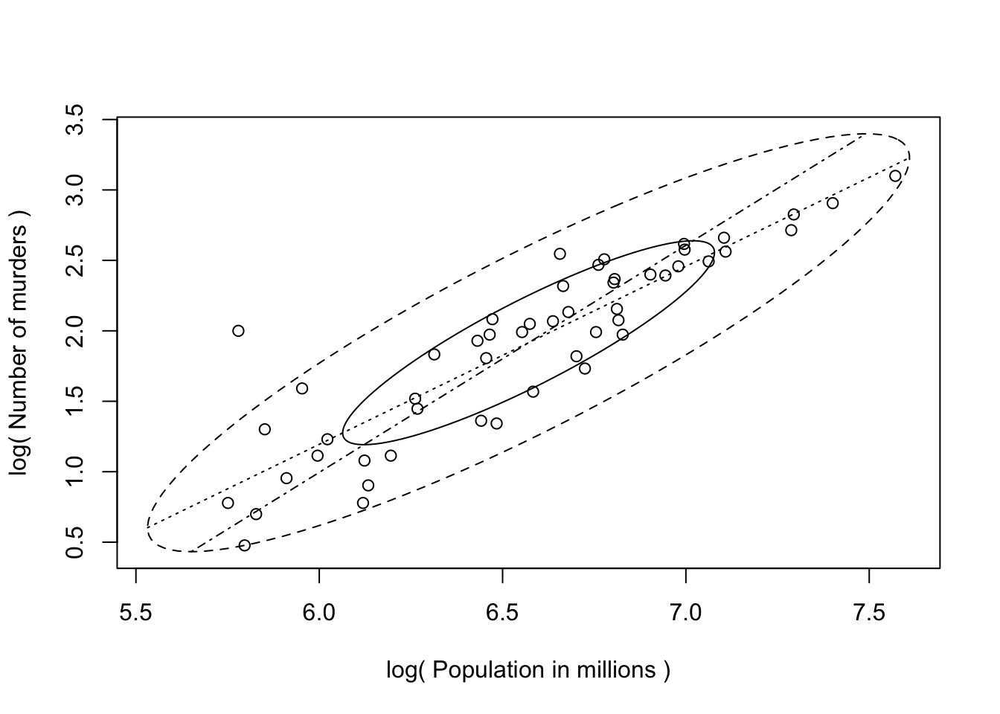
Notice how all the outliers have dissapeared. They were not really outliers, they were just too populated states compared with the rest and the comaprison was unfair.
3.3 Using ggplot2 to create personalised plots
So far we have been using the functions plot(), hist(), density(), etc… However, there if we want to make very specific changes to our plot (like making our favorite point a different colour or changing the background) it becomes difficult. There is a better way to draw plots in R which allows us to modify every single aspect of the plot: it is done using the package ggplot.
The ggplot package is big and learning how to use it takes time. We will not focus on this during this course, but let’s have a quick look at the things we can do with it.
Let’s start by creating the same scatter plot we have above, but using ggplot: we use the funciton ggplot() and specify where our data is stored, next we use “aes()” and include inside the parenthesis the things we want R to use as X and Y variables, in this case the population and the number of murders.
Then we add (+) an indication of the type of plot we want. In this case, we want a scatter plot where each value is a point, so we use “geom_point()” (which stands for geomtry of points).
ggplot(data=dat, aes(x=population, y=total)) +
geom_point() +
xlab("log10(Population size)") +
ylab("log10(Number of murders)")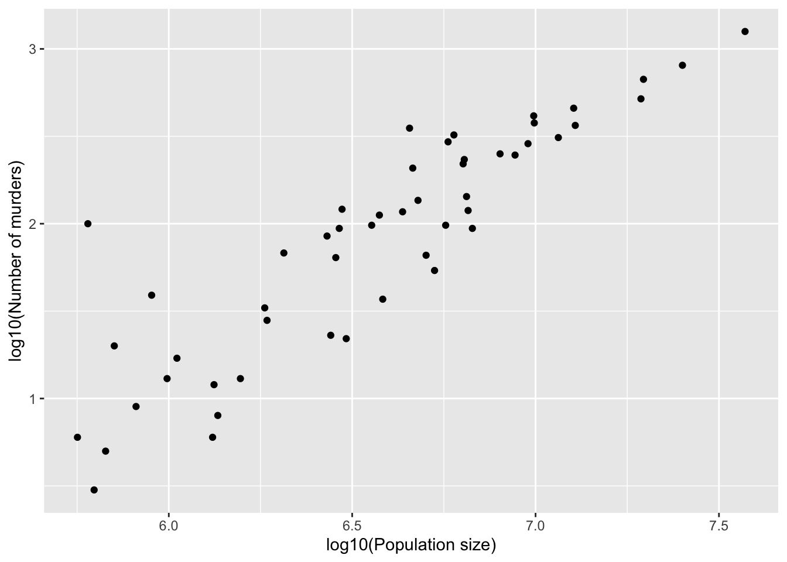
This looks nice, but the grey background is ugly. Let’s remove the grey! To do that, we simply add (+) another indication telling R to use a “white background (bw)”. You’ll start to notice how ggplot works: you use the + symbol to add more and more indications and specifications and make your plot personalised to what you really want.
ggplot(data=dat, aes(x=population, y=total)) +
geom_point() +
xlab("log10(Population size)") +
ylab("log10(Number of murders)") +
theme_bw()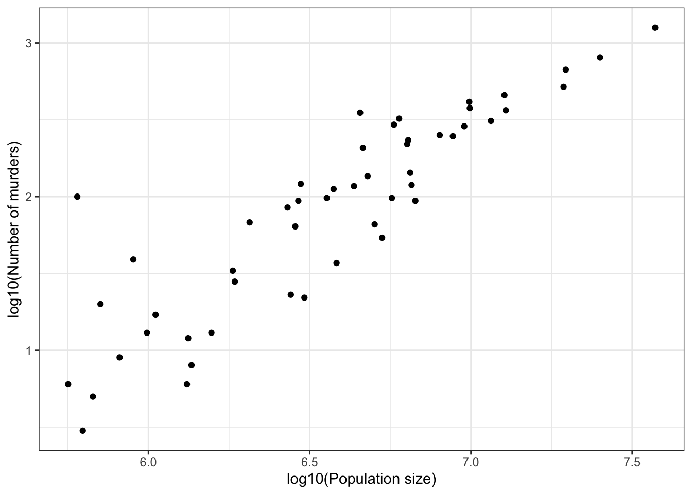
Let’s now change the colout of the points to blue. To do this, we add a color indication (color=“blue”) inside geom_point():
ggplot(data=dat, aes(x=population, y=total)) +
geom_point(color="blue") +
xlab("log10(Population size)") +
ylab("log10(Number of murders)") +
theme_bw()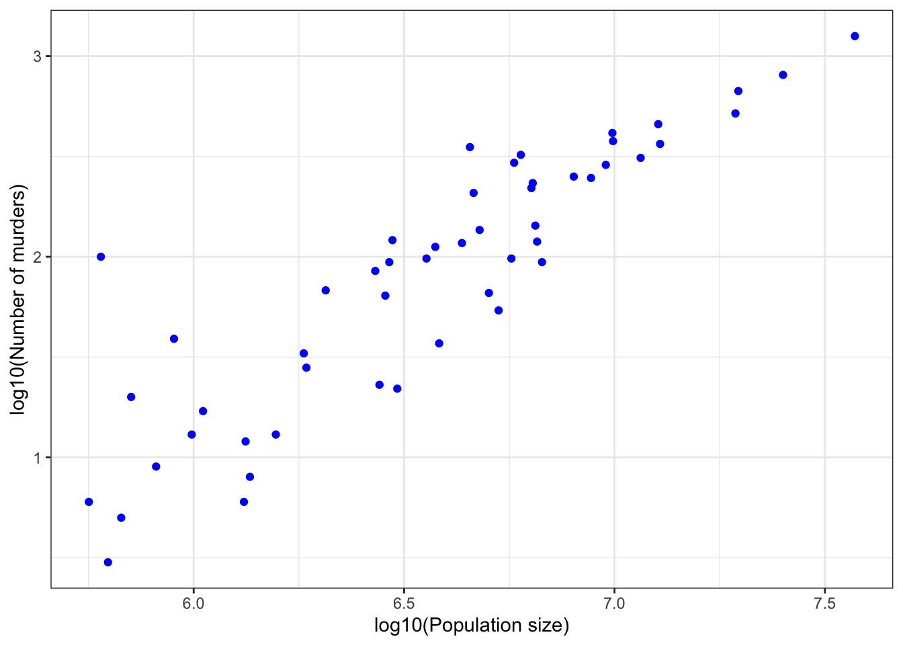
But ggplot can do more than colouring points blue! In fact, we can use the colour not only as a visual decoration, but to actually represent something. For example, let’s tell R to color the points by region (each color will represent a US region). Notice how, whenever we refer to a variable inside our data set, we have to use aes().
ggplot(data=dat, aes(x=population, y=total)) +
geom_point(aes(color=region)) +
xlab("log10(Population size)") +
ylab("log10(Number of murders)") +
theme_bw()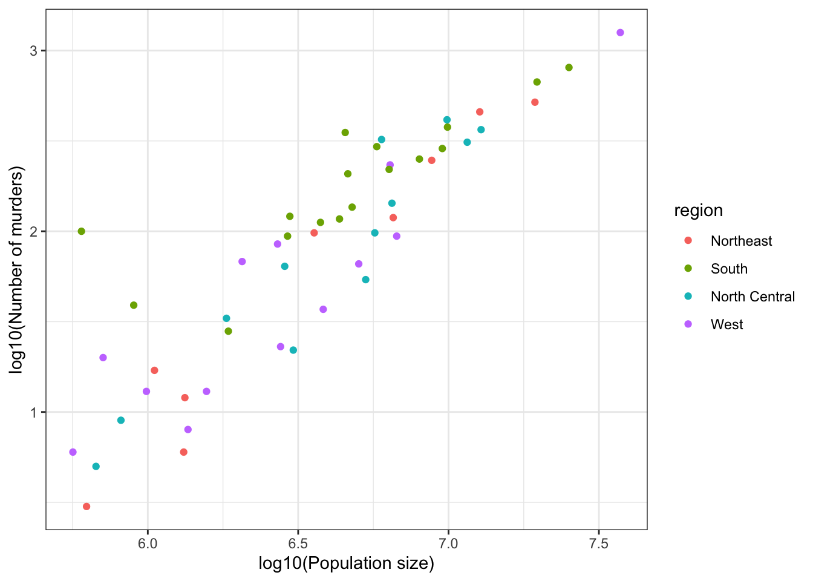
Now we can in fact read not only 2 but 2 variables in the same plots! This plot actually has three dimensions, one of which is the color. Have a go, can you find any particular region with higher population than the rest?
If you have difficulty distinguishing colors, that is no problem. Instead of coding by color we can ask R to code by “shape”, so that each region is represented by a different figure (triangle, square, cross, etc…). It now looks like this:
ggplot(data=dat, aes(x=population, y=total)) +
geom_point(aes(shape=region), size=2) +
xlab("log10(Population size)") +
ylab("log10(Number of murders)") +
theme_bw()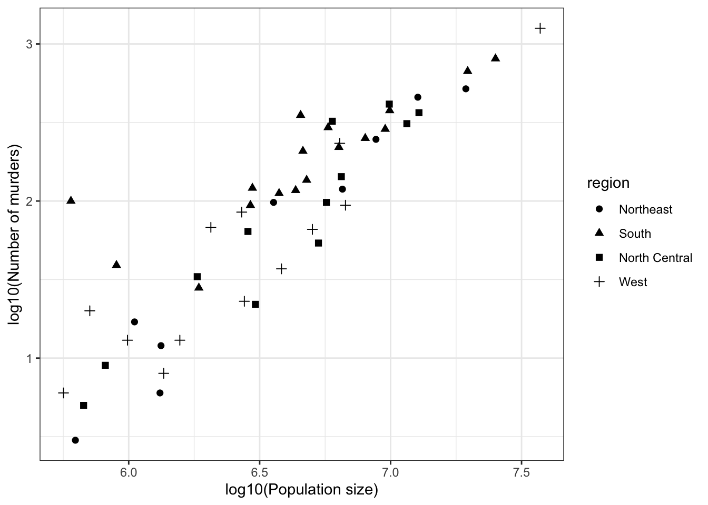
We can even add a fourth variable to our plot! For example, let’s add labels with the abbreviated name of each state. In that way we will not only get their population and number of murders: we will also know which specific state we are talking about.
To do this, we add yet another indication (+) called geom_text() and specify that we wan the label to be “abb”” the state abbreviation included in our data set.
ggplot(data=dat, aes(x=population, y=total)) +
geom_point(aes(color=region)) +
xlab("log10(Population size)") +
ylab("log10(Number of murders)") +
geom_text(aes(label=abb)) +
theme_bw()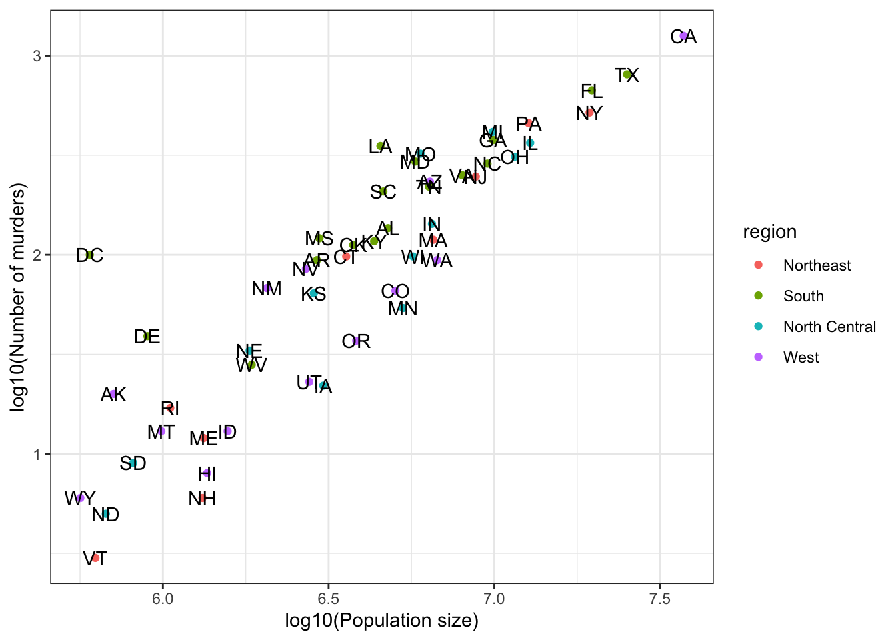
This is nice, however the labels no longer let us see the actual points or colours: they get on the way. To avoid this, instead of using geom_text we can use geom_text_repel, which tells R not to let the text crash with the points or with other text. Let’s see how it looks like now.
ggplot(data=dat, aes(x=population, y=total)) +
geom_point(aes(color=region)) +
xlab("log10(Population size)") +
ylab("log10(Number of murders)") +
geom_text_repel(aes(label=abb)) +
theme_bw()
Much better and cleaner! Now we are ready to continue with more formal comparisons that rely not only on our eyes, but on mathematics and statistics. But before continuing, try applying some of this tools to your own project data.
3.4 Exercises
Now you will have some time to analyse your own project data. You can use any of the functions we learnt here by simply copying and pasting them in a new R file. You can start by askig the following questions:
- How many numeric variables are in my data?
- Can any of them be related?
- Create a scatter plot two variables you suspect could be related. If you can, add marginal densities.
- Do these variables need any type of transformation? Or do they not?
- Are there any outliers? Create a bivariate box plot to find out
- Is there any evidence of relationship between the two variables?
- Create a new scatter plot, but now using the ggplot functions
- Try to add a 3rd variable to your plot by modifying the color or the shape
- Create a density plot
3.5 Covariance
We previously learnt that, when analysing only one variable, we can calculate the standard deviation. The standard deviation is the “average distance” of observations to the mean. For example, in the following plots the average length of the dotted lines is the standard deviation. We can calculate the standard deviation for both population size and number of murders.
But since we have two variables, now we can ask a new question: are they related? do they change in the same way? If one goes up, does the other one also go up?
This question has a very simple meaning if we look at the plots below: it means, do both variables (population and murders) move “away” from the vertical line in the same direction? If gun murders moves to the right, does population also move to the right?
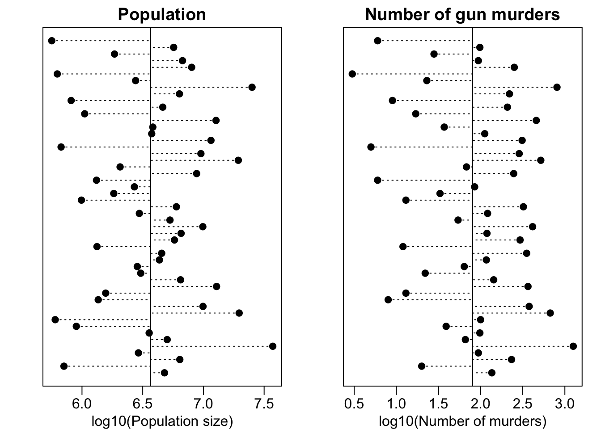
To answer this question, we can simply calculate the length of those dotted lines for each variable, then multiply it. Finally, we find the average. The idea is the following:
If both variables “move to the left” from the mean line, then both numbers will be negative and (-)(-) = + If both variables “move to the right”, then both numbers will be positive and (+)(+) = + If both variables “move in opposite directions:, then one will be positive and one negative, so (+)*(-) = -
This means that:
- If we get a positive number, the variables are related. When one increases the other one increses too. We say that the variables “covariate”.
- If we get a negative number, the variables are also related, but inversely. When one increases the other one increses too. The variables also “covariate”.
- If we get zero, the variables are not related.
We call this number covariance. The easiest way to calculate it in R is using the “cov()” function:
cov(dat$population, dat$total)## [1] 0.2613055The number is positive, so number of murders and population size do covariate.
Note, however, that because the covariance is a multiplication it will depend on how big your numbers are. This means it is sensitive to units: if we work with centimeters, kilometeres or meters, we will get three different numbers. Because of this, the actual value of the correlation does not tell us anything at all: the only thing we can inerpret is the sign.
3.6 Correlation
It is dull that covariance will change depending on the units we use. After all, it should not matter in which units we measured our data!
To solve this problem, instead of calculating the covariance you can calculate the correlation. Correlations are “dimentionless” (they have no units) and they are designed so that, regardless of the units your data is in, you always get the same number. Correlations are calculated in R very easily using the function “cor()”.
corr <- cor(dat$population, dat$total)
corr## [1] 0.8917199Correlations always go from -1 to 1, and the number is very intuitive to interpret:
- If correlation is 1, the two variables have a perfect correlation: they form a line when plotted together
- If correlation is -1, the two variables have a perfect inverse correlation: they form a line with negative slope
- If correlation is 0, the variables are not related at all
Anything in between are intermediate correlations, and the closer the number is to 1 (or -1) the stronger the relationship between variables is. For example, our data has a correlation of 0.89, which is very high. This tells us that population size and number of murders are quite related to each other: when one increases, the other one increases too.
If possible, you should always add the corresponding correlation value to any scatter plot you create. This adds information on how strong the relation between the variables actually is not only to our eyes, but statistically. Let’s add this number to our previous plot.
ggplot(data=dat, aes(x=population, y=total)) +
geom_point(aes(color=region)) +
xlab("log10(Population size)") +
ylab("log10(Number of murders)") +
theme_bw() +
geom_text_repel(aes(label=abb)) +
ggtitle("Gun murders in 2010. Cor = 8.892")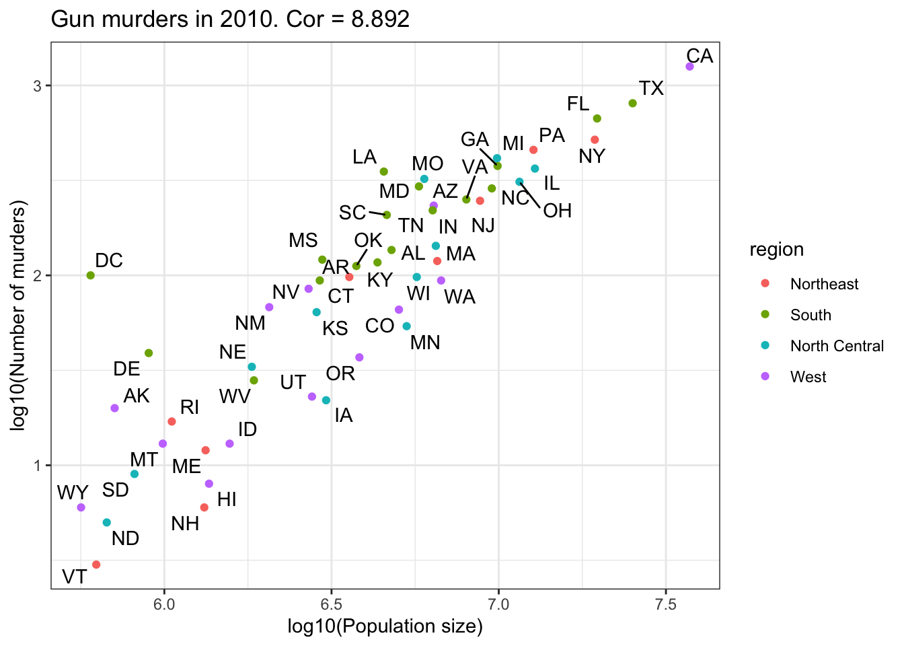
3.7 Predictions and linear models
Let’s now look at the final and most interesting question: can we predict the average number of fun murders that will occur in a state if we know its population size? In statistics this type of problem is called “prediction”. Note, however, that we do not always want to “predict the future”. In this case, for instane, we want to know the value for a state with X number of inhabitants, but that state could’ve existed in the past, could exist in the present or could not even exist. So we will predicting does not always mean finding out things before they happen. In fact, a researchers spend a long time trying to predict past events in order to understand them better and find out what caused them.
The variable we want to predict is our dependent variable (in this case number of murders) and the variables we basing our prediciton on are the independent variables or predictors (in this case the population size). Note that we are right now dealing with the simplest type of prediction: we only have one variable. More often, scientists use tens or hundreds of variables to predict. To do this they implement machine learning techniques. We will look at this in future sessions.
The simplest type of predictive model is the “linear model”. A linear model assumes that you can represent the relationship between your two variables with a straight line (it has to be straight!). For example, like this:
If our states came from an ideal world, they would all fall on top of the line, but since they come from a “real world” full of noise and random variation, they scatter around the line, surrounding it.
The problem is, we do not know what this line looks like. Where does it start? Where does it end? How steep is it? It could be any of the following three lines, or any other line as a matter o fact:
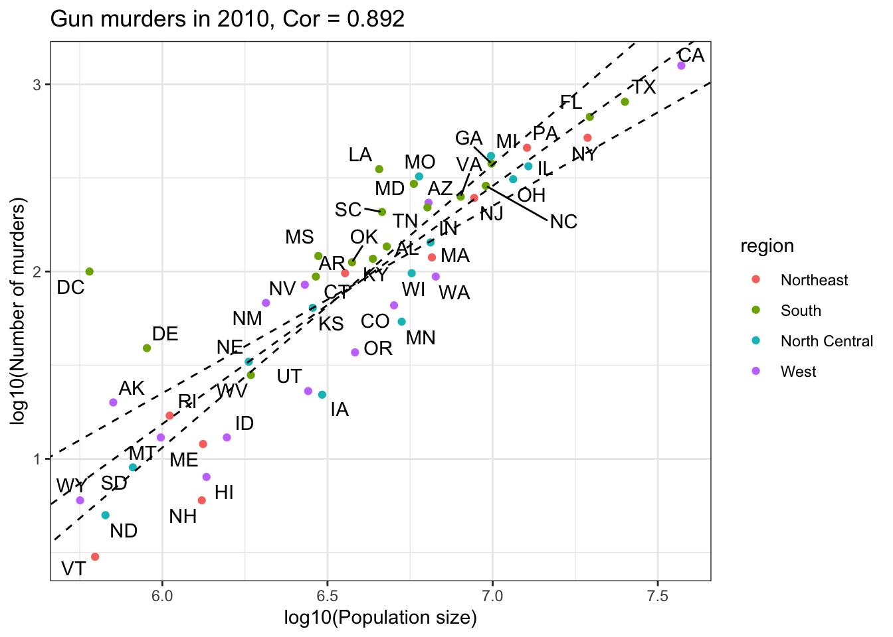
There are an infinite number of possibilities! How to find the appropriate one?
As you will learn in the theoretical session accompanying this tutorial, the way find the ideal line (which we call the “best fit”) is by calculating the distance from every point to an imaginary line (we can change this imaginary line at our will) and adding up all these distances into a total number called the “Sum of squared residuals”. This name comes from the term “residual”, which is the statistical way of saying “distance from the point to the line” and from the fact that we square these numbers to eliminate all negative numbers. Then we find the line that minimises this number: the line that makes it as small as possible. What this means is we will find the line to which all points are closest to. We do this by applying differential calculus, which can be used to find “minimums” of functions.
This might sound overly complicated, but it is ridiculously easy to do it in R. All you need to do is run the function lm() (“lm” stands for linear model) and tell R where your data is stored. You will also need to add a formula with the following format:
what_i_want_to_predict ~ what_i_will_use_as_predictors
The ~ sign is read by R as “as a function of” or “depending on”.
Let’s do this and store the results in a variable called “res.lm”. It should only take a second to run. (Yes, R is finding the best line our of an infinite number of possibilities in under a second!).
res.lm <- lm(formula = total ~ population, data = dat)Now let’s have a look at our results:
res.lm##
## Call:
## lm(formula = total ~ population, data = dat)
##
## Coefficients:
## (Intercept) population
## -6.439 1.271Simple and easy to read: R is telling us that our line is defined by the two numbers -6.439 and 1.271. Hence, the function of our line (the name of our line, if you will) is as follows:
logmurders = -6.439 + 1.271*logpopulation
You can access these two coefficients using the dollar operator ($) followed by “coefficients”:
res.lm$coefficients## (Intercept) population
## -6.439205 1.270876Let’s plot this “best fit” line and our points together:
ggplot(data=dat, aes(x=population, y=total)) +
geom_point(aes(color=region)) +
xlab("log10(Population size)") +
ylab("log10(Number of murders)") +
theme_bw() +
geom_text_repel(aes(label=abb)) +
ggtitle("Gun murders in 2010. Cor = 0.892") +
geom_abline(intercept=res.lm$coefficients[1], slope=res.lm$coefficients[2], linetype="dashed")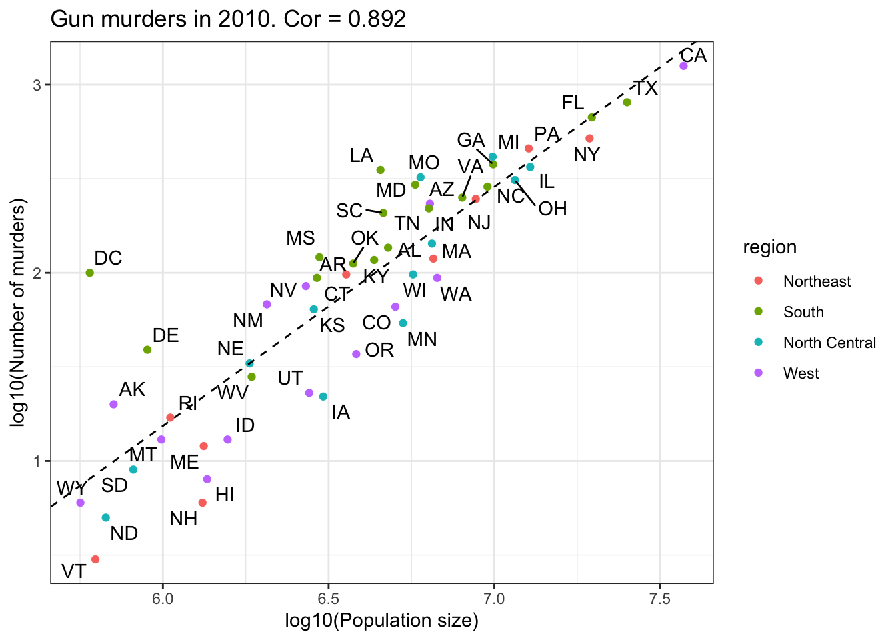
If we want to know more details about the linear model, we can use summary to display the key aspects of our results.
summary(res.lm)##
## Call:
## lm(formula = total ~ population, data = dat)
##
## Residuals:
## Min 1Q Median 3Q Max
## -0.55966 -0.15092 0.00002 0.14696 1.09431
##
## Coefficients:
## Estimate Std. Error t value Pr(>|t|)
## (Intercept) -6.43920 0.60638 -10.62 2.64e-14 ***
## population 1.27088 0.09215 13.79 < 2e-16 ***
## ---
## Signif. codes: 0 '***' 0.001 '**' 0.01 '*' 0.05 '.' 0.1 ' ' 1
##
## Residual standard error: 0.2955 on 49 degrees of freedom
## Multiple R-squared: 0.7952, Adjusted R-squared: 0.791
## F-statistic: 190.2 on 1 and 49 DF, p-value: < 2.2e-16Have a close look at the column named Pr(>|t|). This column tells us if we have enough evidence to conclude that the prediction is valid or not. The smallest this number, the better!
Finally, let’s try to predict the number of murders in some hypothetical state with 50 million inhabitants (a really big state indeed!). Don’t forget that we applied a logarithm, so we will need ot include this in the prediction.
Let’s take the logarithm of 50 million:
log10(50000000)## [1] 7.69897Now let’s feed this number to our “ideal line” equation:
res.lm$coefficients[1] + res.lm$coefficients[2]*7.69897## (Intercept)
## 3.345233Now let’s take the “inverse logarithm” of these number, which basically means elevating 10 to that power:
10^3.345233 ## [1] 2214.282We predict that a state of that size would have approximately 2214 registered murders by gun.
However, predictions are only estiamtes, and estimates are random. If we repeated the experiment hundreds of times, we would get multiple different results! Thus, we should always accompany a prediction with its confidence interval.
We can use ggplot to plot not only the regression line, but also the cofidence interval (shown as a shade). To do this, we use geom_smooth() and specify that we want a linear model (“lm”).
ggplot(data=dat, aes(x=population, y=total)) +
geom_point(aes(color=region)) + geom_smooth(method = "lm") + theme_bw() +
geom_text_repel(aes(label=abb)) +
ggtitle("Gun murders in 2010. Cor = 0.892")## `geom_smooth()` using formula 'y ~ x'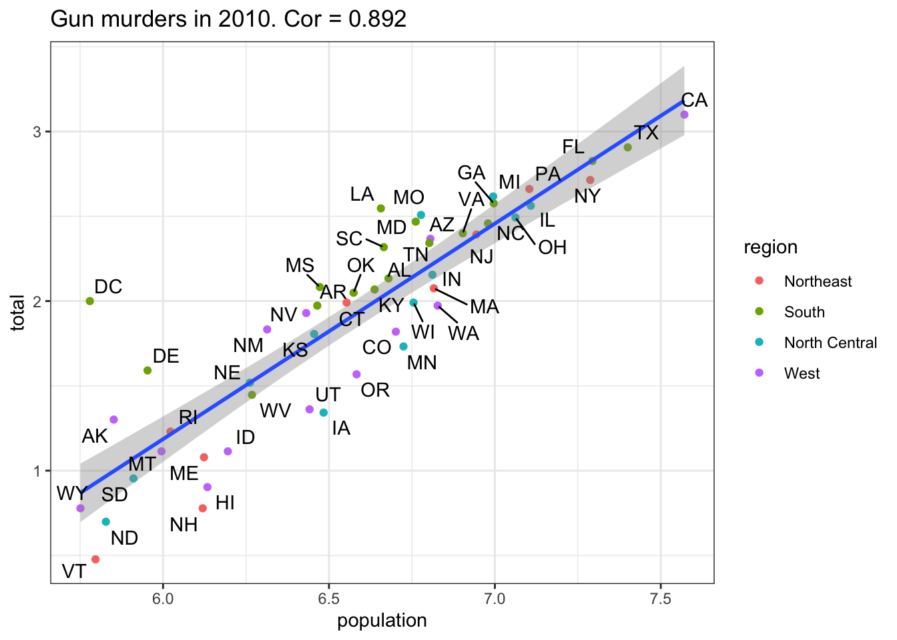
3.8 Correlation does not equal causation
Finally, let’s look at a very illustrative example: the “divorce_margarine” data set. This data set contains data on divorce rates in Maine and per capita consumption of margarine in the US. Let’s store the data in the variable “div”.
div <- divorce_margarineNow let’s look at the first few lines:
head(div)## divorce_rate_maine margarine_consumption_per_capita year
## 1 5.0 8.2 2000
## 2 4.7 7.0 2001
## 3 4.6 6.5 2002
## 4 4.4 5.3 2003
## 5 4.3 5.2 2004
## 6 4.1 4.0 2005Finally, let’s plot it and perform a linear model:
ggplot(data=div, aes(x=margarine_consumption_per_capita, divorce_rate_maine)) + geom_point() + theme_bw() + xlab("Margarine consumption per capita") + ylab("Divorce rate in Maine") + geom_smooth(method = "lm")## `geom_smooth()` using formula 'y ~ x'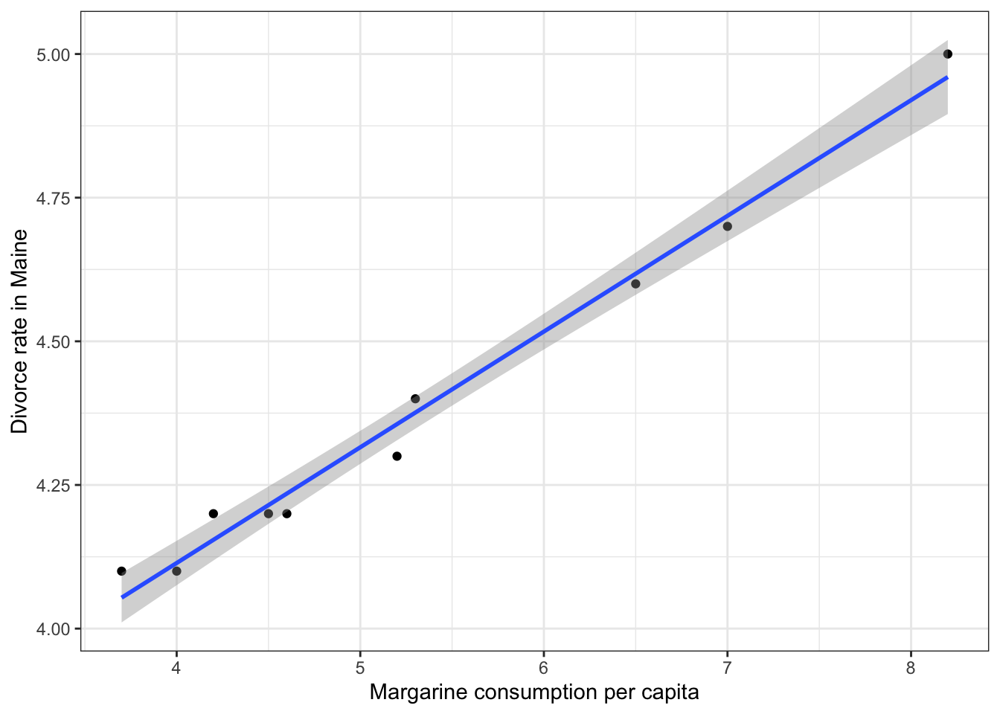
The relationship seems very high! Let’s calculate the correlation:
cor(div$divorce_rate_maine, div$margarine_consumption_per_capita)## [1] 0.9925585Indeed, the correlation is 0.93. An extermely high number!
Based on this, would we conclude that an increase in margarine consumption causes divorce? Of course not, this doesn’t make sense! This illustrates one of the most important problems in statistics, and one of the most common soures of error. We can NEVER conclude what is the cause of what using statistics. The only thing we can say is that the variables are related, but there might be thousands of explanations for why that is. For example, maybe states which consume more margarine have a life style where divorce is more common. None of them is the cause of the other: they are both a reflection of life style. Or maybe there is no relationship at all between margarine and divorce and this is just an odd coincidence! We really cannot know. The only way to determine what is the cause of a phenomenon is making well experiments (for example, recruiting couples and feeding them margarine or some other control food, then finding if those fed with margarine divorced more often). And even then it is difficult to control for unkown factors.
So the final message is the follwing: if two variables are correlated we know they might influence one another or reflect a commmon phenomenon, but we can not conclude any causality.
3.9 Exercises
Now you will have some time to analyse your own project data. You can use any of the functions we learnt here by simply copying and pasting them in a new R file. You can start by askig the following questions:
- Take the two variables you worked with in the previous exercise. Calculate their covariance
- Now calculate their correlation
- Do they seem to follow a linear trend? If so, try to fit a linear model to them using the lm() function.
- Now plot the “best fit” line. Does it approximate the data well enough?
- If so, try to predict what some unobserved values would look like.